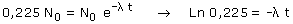
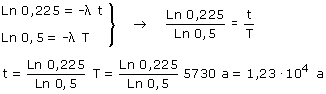

Cuando la planta murió sus tejidos contenían
la misma proporción en C-14 que una planta actual, según
pasa el tiempo esta proporción se va reduciendo porque el C-14
se desintegra.
La planta al morir contenía N0 átomos de C-14,
hoy, al cabo de un tiempo t, quedan 0,225·N0
Aplicando la ecuación de la desintegración:

Relación entre constante de desintegración y período de semidesintegración:

Combinando las dos expresiones resulta un sistema de dos ecuaciones:

Entonces la planta murió hace 1.23·104 años